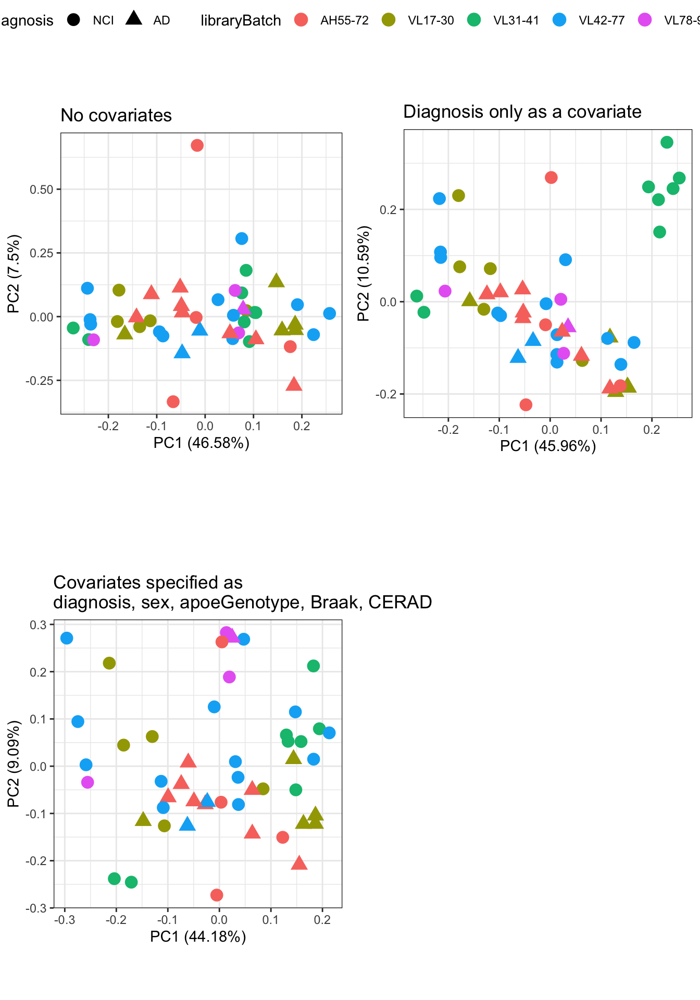
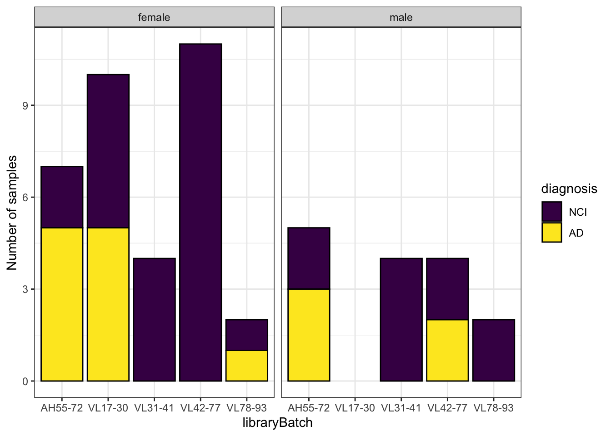

Last updated: 2021-11-25
Checks: 7 0
Knit directory: 2021-rosmap-ire/
This reproducible R Markdown analysis was created with workflowr (version 1.6.2). The Checks tab describes the reproducibility checks that were applied when the results were created. The Past versions tab lists the development history.
Great! Since the R Markdown file has been committed to the Git repository, you know the exact version of the code that produced these results.
Great job! The global environment was empty. Objects defined in the global environment can affect the analysis in your R Markdown file in unknown ways. For reproduciblity it’s best to always run the code in an empty environment.
The command set.seed(20211022) was run prior to running the code in the R Markdown file. Setting a seed ensures that any results that rely on randomness, e.g. subsampling or permutations, are reproducible.
Great job! Recording the operating system, R version, and package versions is critical for reproducibility.
Nice! There were no cached chunks for this analysis, so you can be confident that you successfully produced the results during this run.
Great job! Using relative paths to the files within your workflowr project makes it easier to run your code on other machines.
Great! You are using Git for version control. Tracking code development and connecting the code version to the results is critical for reproducibility.
The results in this page were generated with repository version 08ab9c8. See the Past versions tab to see a history of the changes made to the R Markdown and HTML files.
Note that you need to be careful to ensure that all relevant files for the analysis have been committed to Git prior to generating the results (you can use wflow_publish or wflow_git_commit). workflowr only checks the R Markdown file, but you know if there are other scripts or data files that it depends on. Below is the status of the Git repository when the results were generated:
Ignored files:
Ignored: .DS_Store
Ignored: .Rapp.history
Ignored: .Rhistory
Ignored: .Rproj.user/
Ignored: code/.DS_Store
Ignored: data/.DS_Store
Ignored: data/confidentialData/
Untracked files:
Untracked: SEsraFiles.txt
Untracked: SraAccList (1).txt
Untracked: analysis/Mertensetal_obtainData.Rmd
Untracked: analysis/explorationUndiff.Rmd
Untracked: analysis/mertensQC.Rmd
Untracked: atac.txt
Untracked: code/getENA.sh
Untracked: data/fastqc_mertens_trimmed/
Untracked: data/fastqc_raw_Mertens/
Untracked: data/filereport_read_run_PRJEB44542_tsv.txt
Untracked: data/metaAE.tsv
Untracked: got.txt
Untracked: output/ire3.png
Untracked: output/ire5.png
Unstaged changes:
Modified: analysis/DGE.Rmd
Modified: analysis/_site.yml
Modified: analysis/first-analysis.Rmd
Modified: analysis/ire_test.Rmd
Note that any generated files, e.g. HTML, png, CSS, etc., are not included in this status report because it is ok for generated content to have uncommitted changes.
These are the previous versions of the repository in which changes were made to the R Markdown (analysis/removeBatchEffects.Rmd) and HTML (docs/removeBatchEffects.html) files. If you’ve configured a remote Git repository (see ?wflow_git_remote), click on the hyperlinks in the table below to view the files as they were in that past version.
| File | Version | Author | Date | Message |
|---|---|---|---|---|
| html | 08ab9c8 | Karissa Barthelson | 2021-10-29 | Build site. |
| Rmd | 2faac44 | Karissa Barthelson | 2021-10-29 | more analysis. after ire |
| Rmd | 452ecf8 | Karissa Barthelson | 2021-10-27 | added an exploration of removal of batch effects |
| html | 452ecf8 | Karissa Barthelson | 2021-10-27 | added an exploration of removal of batch effects |
| Rmd | 0e46088 | Karissa Barthelson | 2021-10-25 | initial QC done? |
| html | 0e46088 | Karissa Barthelson | 2021-10-25 | initial QC done? |
library(tidyverse)
library(magrittr)
library(edgeR)
library(sva)
library(pander)
library(scales)
library(pheatmap)
library(ggpubr)
library(ggfortify)
library(ggrepel)
library(ggeasy)
theme_set(theme_bw())
panderOptions("big.mark", ",")
panderOptions("table.split.table", Inf)
panderOptions("table.style", "rmarkdown")In this analysis, I will explore the effects of removing the batch effects present during the generation of this dataset. In the initial QC doc, I noted that library preparation/RNA-seq batch still appears to drive some of the variation in this dataset. Lagomarsino et al. 2021 noted that they used ComBat from the sva package to remove batch effects. So I will try this too.
dge <- readRDS("data/confidentialData/dge.rds")
# edit the covariates to be factors rather than character/integers
dge$samples %<>%
dplyr::select(1:11, diagnosis, apoeGenotype, pmi, sex, yearsEducation, CERAD, Braak) %>%
mutate(diagnosis = case_when(
diagnosis == "no cognitive impairment" ~ "NCI",
diagnosis == "Alzheimer Disease" ~ "AD"
) %>%
factor(levels = c("NCI", "AD")),
sex = as.factor(sex),
apoeGenotype = factor(apoeGenotype, levels = c("E3/E3", "E2/E3", "E3/E4" ,"E4/E4", "E2/E2")),
CERAD = as.factor(CERAD),
Braak = as.factor(Braak)
) I imported the dge object generated in the initial QC doc. This dge object contains the expression values per sample after:
The ComBat-Seq function of the sva package is designed to remove batch effects from RNA-seq data. It uses a negative binomial regression to model the count matrix, and estimate parameters representing the batch effects. Then it provides adjusted data by mapping the original data to an expected distribution if there were no batch effects. The adjusted data preserve the integer nature of count matrix. Like ComBat, it requires known a batch variable, in this case, the library preparation batch.
ComBat-Seq allows specification of biological covariates whose signals will be preserved in the adjusted data. I will compare the results in a principal component analysis with and without including covariates (i.e. diagnosis, sex). Running ComBat-seq does appear to remove most of the variation due to library batch. However, samples still do not overly separate by diagnosis.
# make a list of three possible options in removing batch effects
adjustedCounts <- list(nocovar = ComBat_seq(dge$counts,
batch=dge$samples$libraryBatch,
group=NULL),
covar_diagnosisOnly = ComBat_seq(dge$counts,
batch=dge$samples$libraryBatch,
group=dge$samples$diagnosis
), allCovar = ComBat_seq(dge$counts,
batch = dge$samples$libraryBatch,
covar_mod = dge$samples %>%
dplyr::select(diagnosis, sex, apoeGenotype, Braak, CERAD) %>%
as.data.frame()
)
)Found 5 batches
Using null model in ComBat-seq.
Adjusting for 0 covariate(s) or covariate level(s)
Estimating dispersions
Fitting the GLM model
Shrinkage off - using GLM estimates for parameters
Adjusting the data
Found 5 batches
Using full model in ComBat-seq.
Adjusting for 1 covariate(s) or covariate level(s)
Estimating dispersions
Fitting the GLM model
Shrinkage off - using GLM estimates for parameters
Adjusting the data
Found 5 batches
Using null model in ComBat-seq.
Adjusting for 14 covariate(s) or covariate level(s)
Estimating dispersions
Fitting the GLM model
Shrinkage off - using GLM estimates for parameters
Adjusting the dataPCAplots <- adjustedCounts %>%
lapply(function(x) {
cpm(x, log = TRUE) %>%
t() %>%
prcomp() %>%
autoplot(data = tibble(sample = rownames(.$x)) %>%
left_join(dge$samples),
colour = "libraryBatch",
shape = "diagnosis",
size = 4) +
# scale_colour_viridis_d(end = 0.9) +
theme(aspect.ratio = 1) +
ggtitle("libraryBatch")
}
)
ggarrange(
PCAplots$nocovar +
ggtitle("No covariates"),
PCAplots$covar_diagnosisOnly +
ggtitle("Diagnosis only as a covariate"),
PCAplots$allCovar +
ggtitle("Covariates specified as\ndiagnosis, sex, apoeGenotype, Braak, CERAD"),
common.legend = TRUE
)
| Version | Author | Date |
|---|---|---|
| 452ecf8 | Karissa Barthelson | 2021-10-27 |
After some reading about ComBat, I noted that “not including covariates may introduce bias or lead to the removal of biological signal”. Therefore, if I were to use ComBat to remove batch effects, I should use the method where I retain all co-variates.
However, I found this paper by Nygaard et al. 2016, who showed that removing batch effects before performing an analysis between groups (e.g. differential gene expression analysis) is actually not the most ideal method. Especially when the groups of interest are unbalanced within batches. Unfortunately, this is the case in this experiment (see graph below).
dge$samples %>%
dplyr::select(sample, libraryBatch, diagnosis, sex) %>%
group_by(libraryBatch, diagnosis, sex) %>%
summarise(n()) %>%
ggplot(aes(x = libraryBatch, y = `n()`)) +
geom_col(aes(fill = diagnosis),
colour = "black") +
facet_wrap(~sex) +
labs(y = "Number of samples") +
scale_fill_viridis_d()
| Version | Author | Date |
|---|---|---|
| 452ecf8 | Karissa Barthelson | 2021-10-27 |
Because we have unbalanced groups of interest within batches (i.e. library prep batch), removing batch effects via ComBat should not be performed. Instead, I will include the effect of library batch in the model for differential gene expression analysis following the instructions in edgeRUsersGuide (section 3.4.3 Batch effects).
sessionInfo()R version 4.0.2 (2020-06-22)
Platform: x86_64-apple-darwin17.0 (64-bit)
Running under: macOS Mojave 10.14.3
Matrix products: default
BLAS: /Library/Frameworks/R.framework/Versions/4.0/Resources/lib/libRblas.dylib
LAPACK: /Library/Frameworks/R.framework/Versions/4.0/Resources/lib/libRlapack.dylib
locale:
[1] en_AU.UTF-8/en_AU.UTF-8/en_AU.UTF-8/C/en_AU.UTF-8/en_AU.UTF-8
attached base packages:
[1] stats graphics grDevices utils datasets methods base
other attached packages:
[1] ggeasy_0.1.3 ggrepel_0.9.1 ggfortify_0.4.12
[4] ggpubr_0.4.0 pheatmap_1.0.12 scales_1.1.1
[7] pander_0.6.4 sva_3.36.0 BiocParallel_1.22.0
[10] genefilter_1.70.0 mgcv_1.8-36 nlme_3.1-152
[13] edgeR_3.30.3 limma_3.44.3 magrittr_2.0.1
[16] forcats_0.5.1 stringr_1.4.0 dplyr_1.0.7
[19] purrr_0.3.4 readr_1.4.0 tidyr_1.1.3
[22] tibble_3.1.2 ggplot2_3.3.5 tidyverse_1.3.1
[25] workflowr_1.6.2
loaded via a namespace (and not attached):
[1] colorspace_2.0-2 ggsignif_0.6.2 ellipsis_0.3.2
[4] rio_0.5.27 rprojroot_2.0.2 fs_1.5.0
[7] rstudioapi_0.13 farver_2.1.0 bit64_4.0.5
[10] AnnotationDbi_1.50.3 fansi_0.5.0 lubridate_1.7.10
[13] xml2_1.3.2 splines_4.0.2 cachem_1.0.5
[16] knitr_1.33 jsonlite_1.7.2 broom_0.7.8
[19] annotate_1.66.0 dbplyr_2.1.1 compiler_4.0.2
[22] httr_1.4.2 backports_1.2.1 assertthat_0.2.1
[25] Matrix_1.3-4 fastmap_1.1.0 cli_3.0.0
[28] later_1.2.0 htmltools_0.5.1.1 tools_4.0.2
[31] gtable_0.3.0 glue_1.4.2 Rcpp_1.0.7
[34] carData_3.0-4 Biobase_2.48.0 cellranger_1.1.0
[37] jquerylib_0.1.4 vctrs_0.3.8 xfun_0.24
[40] openxlsx_4.2.4 rvest_1.0.0 lifecycle_1.0.0
[43] rstatix_0.7.0 XML_3.99-0.6 hms_1.1.0
[46] promises_1.2.0.1 parallel_4.0.2 RColorBrewer_1.1-2
[49] yaml_2.2.1 curl_4.3.2 memoise_2.0.0
[52] gridExtra_2.3 sass_0.4.0 stringi_1.6.2
[55] RSQLite_2.2.7 highr_0.9 S4Vectors_0.26.1
[58] BiocGenerics_0.34.0 zip_2.2.0 rlang_0.4.11
[61] pkgconfig_2.0.3 bitops_1.0-7 matrixStats_0.59.0
[64] evaluate_0.14 lattice_0.20-44 labeling_0.4.2
[67] cowplot_1.1.1 bit_4.0.4 tidyselect_1.1.1
[70] R6_2.5.0 IRanges_2.22.2 generics_0.1.0
[73] DBI_1.1.1 pillar_1.6.1 haven_2.4.1
[76] whisker_0.4 foreign_0.8-81 withr_2.4.2
[79] survival_3.2-11 abind_1.4-5 RCurl_1.98-1.3
[82] modelr_0.1.8 crayon_1.4.1 car_3.0-11
[85] utf8_1.2.1 rmarkdown_2.9 locfit_1.5-9.4
[88] grid_4.0.2 readxl_1.3.1 data.table_1.14.0
[91] blob_1.2.1 git2r_0.28.0 reprex_2.0.0
[94] digest_0.6.27 xtable_1.8-4 httpuv_1.6.1
[97] stats4_4.0.2 munsell_0.5.0 viridisLite_0.4.0
[100] bslib_0.2.5.1